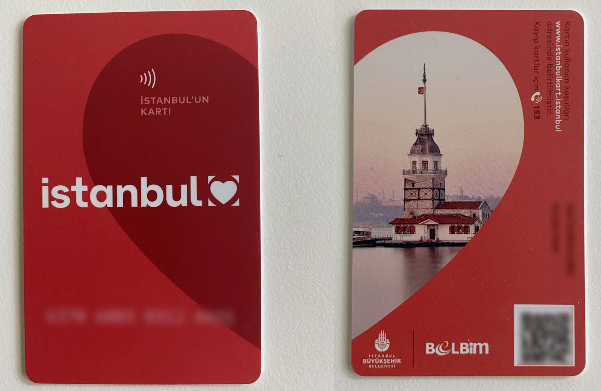

|  |
You can use İstanbulkart for all public transportation in İstanbul. This includes boats, subways, buses, tramways and funiculars. |
|
The metro and the tram system of İstanbul have a wide network and provide easy access to many of the major points both in the European and Asian sides.
M1A Yenikapı - Atatürk Airport is the first rail system operation of Metro İstanbul. The line, which constitutes the first part of M1 operation, starts from Yenikapı integration zone, passes through Bayrampaşa region and reaches to Otogar Station. Following the direction of Merter, passing through Zeytinburnu and extending to Atatürk Airport, M1A Line connects the Suriçi region to the airport. M1B operation is carried out jointly between Yenikapı and Otogar stations with M1A line. Separated after Otogar Station, the line passes through Esenler and Bağcılar Square and ends in integration with M3 Kirazlı-Olimpiyat-Başakşehir metro line at Kirazlı region. The first stage of the line, which was started to be built in 1992 to provide service between Yenikapı and Hacıosman, was commissioned on September 16th, 2000. It also has the branch line to Seyrantepe district from Sanayi Mahallesi Station, which is located on the main line. Construction of the line was started in 2006 and the line serves in between Kirazlı and Başakşehir / Metrokent stations. The line starts from Kadıköy and moves along D100 route in Acıbadem region, following this route up to Sabiha Gökçen Airport. M5 Line is the second metro line of the Anatolian Side, and it is the first driverless metro line in Turkey. The line starts at Üsküdar Square then passes through Ümraniye district centre and ends at Çekmeköy Square. M6 Metro Line ensures the access of passengers arriving from M2 Yenikapı - Hacıosman Metro Line to Boğaziçi University and Hisarüstü area. M7 Mecidiyeköy-Mahmutbey Metro Line is commissioned as the first fully automatic driverless metro of the European side of İstanbul and passes through Şişli, Kağıthane, Eyüpsultan, Gaziosmanpaşa, Esenler and Bağcılar districts where approximately 3 million people live. Bahariye and Masko stations of the first stage of M9 Ataköy- Olimpiyat Metro Line is commissioned on May 29th, 2021. M9 Line was combined with İkitelli Sanayi, Ziya Gökalp Olimpiyat stations that provide shuttle operation within M3 Line and started providing services between Bahariye-Olimpiyat stations. For more information, please visit the official website of metro lines. Another alternative for finding all public transportation schedules is the Trafi App on Google Play or App Store. | |
It was originally built between Sirkeci and Aksaray and then connected to Topkapı and Zeytinburnu directions. Line is now extended up to Eminönü Station and passes over Galata Bridge and connects to Fındıklı. Kadıköy-Moda Tram Line starts from Kadıköy Square, follows the reserved bus lane and reaches Bahariye Street, and finally arrives back to Kadıköy Square via Moda Street. Line was started of the Sultançiftliği and Gaziosmanpaşa area and between the Şehitlik and Mescid-i Selam stations. Finally, the line reached Topkapı passing through Edirnekapı and Vatan areas. The line is in between Cibali and Alibeyköy Coach Stations. It is designed in a way to not to harm the historical texture and not to damage any historical structure, since the line is located parallel to the route of the Historic Peninsula and the coastline. For more information, please visit the municipality's website. | |
The İstanbul nostalgic tramways are two heritage tramlines in the city of İstanbul, Turkey.
The length of the European side Taksim-Tünel (T2) tramline is 1.6 kilometers (0.99 mi), with 5 stops, Taksim, Odakule, Galatasaray, Ağa Cami and Tünel (Şişhane). The line runs between Taksim and Tünel via İstiklal Caddesi (Independence Avenue). This road was formerly used by tram, bus & car. |
 |
Taksim-Kabataş Funicular Line integrates maritime and rail-based transport. Taksim and Kabataş stops are the only two stops of this line. The line is built between Rumeli Hisarüstü region and Aşiyan Park located on the Bosphorus coast. The line facilitates access between the Bosphorus coast and Büyükdere Street with only two stops in the entire line. | |
Buses are definitely the cheapest and the most economic means of transport, though they are usually overcrowded and it’s not easy to find out which one you should catch.
The IETT website has various maps and mechanisms for getting information on the system which are unfortunately in Turkish only. There is also a private lined express bus service which is called Metrobus.
| |
The Dolmuş (yellow shared taxi) is a public taxi runs on a fixed, short, circular route.
It is an easy and practical way of transportation through the city. The shared taxis do not drive until all seats are occupied.
Many locals use Dolmuş. The price depends on your destination and is paid directly to the driver in cash upon boarding (a little more than the bus).
| |
|
|
|
|
Uber re-launched operations in 2021 and now works with the yellow and turquoise taxis of the metropolis.
You can arrange your ride by using the Uber app. There is also a price calculator that calculates the approximate cost in advance, which will help you plan your trip.
|
|